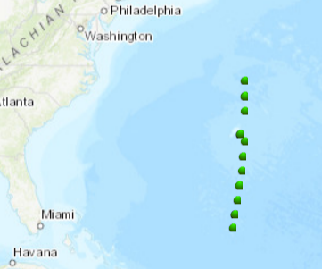
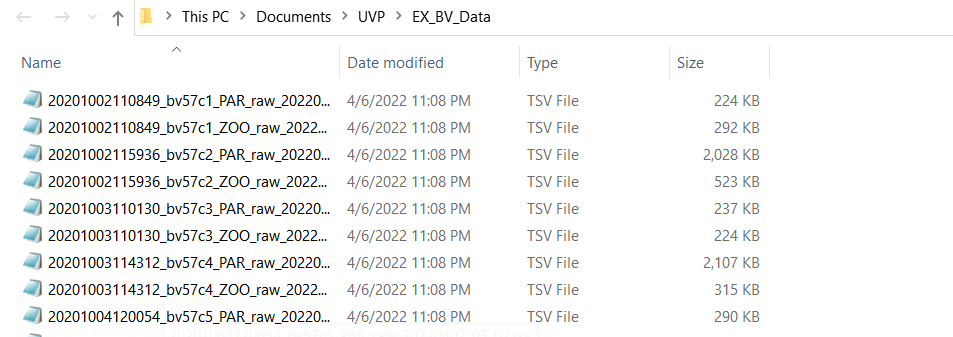

Importing UVP Data From Ecopart Export
The first step to importing ecopart data is to guarantee that you exported the data correctly from ecopart. Follow those instructions here.
The next step is to import your into R for analysis.
All data in this UVP tutorial comes from the bats validation cruise in the Ecopart project “UofSC_UVP5_BATS_ae2016”. These casts were along a bats validation along a latitudinal transect.

The exported files should all be in a single directory

Importing the data:
Using the r function
ecopart_import()assign the one argument of a path to the directory of your filesAssign the files to a list object
path <- "~/UVP/EX_BV_Data" #path to ecopart export directory
ecopart_list <- ecopart_import(path) #load files- This will create a three element list which can be used in analysis built into EcotaxaTools
“par_files” - a list of tibbles with each particle file
“zoo_files” - a list of tibbles with each plankton image file (classic tsv)
“meta” - a tibble with the meta
Understanding the ecopart file list
If you are new to working with lists, it’s worth reading a bit about them. While lists can be clunky, it allows for looping over large amounts of data stored in memory.
Below, I’ll briefly show how to interact with some of the data stored in the ecopart list
Looking at zooplankton data
Zooplankton data are stored in tibbles in the list “zoo_files”. You can access elements of a list using the ‘$’ operator or by indexing the ‘bare’ elements with [[ index operator
#all below with index the names files
names(ecopart_list$zoo_files) [1] "bv57c1" "bv57c2" "bv57c3" "bv57c4" "bv57c5" "bv57c6"
[7] "bv57c7" "bv57c8" "bv57c9" "bv57c10" "bv57c11" "bv57c12"
[13] "bv57c13" "bv57c14" "hs1390c1" "hs1390c2" "bv57c15" "bv57c16"
[19] "bv57c17" "bv57c18" "bv57c19" "bv57c20" "bv57c21" "hs1391c1"
[25] "hs1391c2" "hs1391c3"names(ecopart_list[["zoo_files"]]) [1] "bv57c1" "bv57c2" "bv57c3" "bv57c4" "bv57c5" "bv57c6"
[7] "bv57c7" "bv57c8" "bv57c9" "bv57c10" "bv57c11" "bv57c12"
[13] "bv57c13" "bv57c14" "hs1390c1" "hs1390c2" "bv57c15" "bv57c16"
[19] "bv57c17" "bv57c18" "bv57c19" "bv57c20" "bv57c21" "hs1391c1"
[25] "hs1391c2" "hs1391c3"names(ecopart_list[[3]]) [1] "bv57c1" "bv57c2" "bv57c3" "bv57c4" "bv57c5" "bv57c6"
[7] "bv57c7" "bv57c8" "bv57c9" "bv57c10" "bv57c11" "bv57c12"
[13] "bv57c13" "bv57c14" "hs1390c1" "hs1390c2" "bv57c15" "bv57c16"
[19] "bv57c17" "bv57c18" "bv57c19" "bv57c20" "bv57c21" "hs1391c1"
[25] "hs1391c2" "hs1391c3"Each zooplankton tibble has data from all vignettes collected from an individual uvp cast. You can access these in multiple ways with either the $ operator or [[ operators. These are very similar to the export data from standard Ecotaxa .tsv files. You can read more about those [here](./main_tsv-file-info.html). The key difference from these files are that some header files are slightly different. Namely, there are no object_ columns. To account for this, much of the other importing functions for other instruments format to match the UVP.
ecopart_list$zoo_files[[3]]# A tibble: 301 x 91
orig_id objid name taxo_hierarchy classif_qual depth_including~ psampleid
<chr> <dbl> <chr> <chr> <chr> <dbl> <dbl>
1 bv57c3_2~ 2.16e8 livi~ living V 124 34307
2 bv57c3_1~ 2.16e8 Cten~ living>Eukary~ V 48.9 34307
3 bv57c3_1~ 2.16e8 Cten~ living>Eukary~ V 48.9 34307
4 bv57c3_1~ 2.16e8 Cnid~ living>Eukary~ V 52 34307
5 bv57c3_2~ 2.16e8 Cnid~ living>Eukary~ V 142. 34307
6 bv57c3_1~ 2.16e8 Cnid~ living>Eukary~ V 37.9 34307
7 bv57c3_1~ 2.16e8 Acan~ living>Eukary~ V 49.2 34307
8 bv57c3_1~ 2.16e8 Cnid~ living>Eukary~ V 51.2 34307
9 bv57c3_1~ 2.16e8 Cnid~ living>Eukary~ V 51.3 34307
10 bv57c3_1~ 2.16e8 Cnid~ living>Eukary~ V 56.7 34307
# ... with 291 more rows, and 84 more variables: `%area` <dbl>, angle <dbl>,
# area <dbl>, area_exc <dbl>, areai <dbl>, bx <dbl>, by <dbl>, cdexc <dbl>,
# centroids <dbl>, circ. <dbl>, circex <dbl>, compentropy <dbl>,
# compm1 <dbl>, compm2 <dbl>, compm3 <dbl>, compmean <dbl>, compslope <dbl>,
# convarea <dbl>, convarea_area <dbl>, convperim <dbl>,
# convperim_perim <dbl>, cv <dbl>, elongation <dbl>, esd <dbl>, fcons <dbl>,
# feret <dbl>, feretareaexc <dbl>, fractal <dbl>, height <dbl>, ...